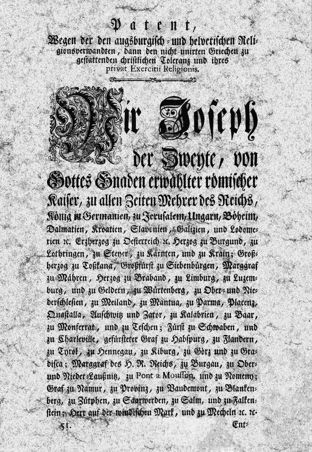
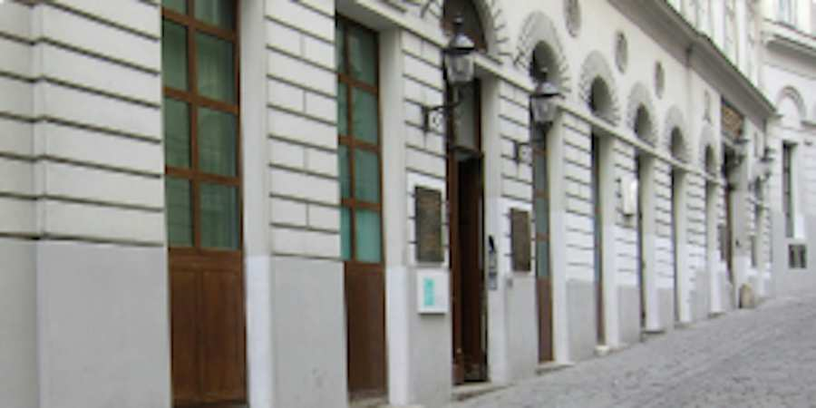

Die IKG Wien
Über die Israelitische Kultusgemeinde Wien
Lebendige Gemeinde mit langer wechselvoller Geschichte
Schulen, Synagogen, koschere Restaurants und Geschäfte, Mikwaot, ein vielfältiges Kulturleben und intensive Jugendarbeit: Die kleine Wiener jüdische Gemeinde zählt heute zu den lebendigsten im deutschsprachigen Raum. Die Israelitische Kultusgemeinde (IKG) Wien hat knapp 8.000 Mitglieder, insgesamt leben etwa 12.000 Jüdinnen und Juden in Wien. Der Bruch durch die Shoah ist in den Innenbezirken nicht nur auf Schritt und Tritt etwa durch die Steine der Erinnerung spürbar. Sie dezimierte auch die jüdische Bevölkerung enorm. Zu Beginn der Ersten Republik lebten nach dem Ersten Weltkrieg an die 200.000 Juden und Jüdinnen in Wien.

Die Shoah war die größte, allerdings nicht einzige Zäsur in der wechselvollen Geschichte der Wiener jüdischen Gemeinde. Die Wiener Gesera bedeutete 1421 das durchaus blutige Ende der mittelalterlichen jüdischen Gemeinde. Die Überreste der Synagoge am Judenplatz aus dieser Zeit können heute in einer Außenstelle des Jüdischen Museums Wien besichtigt werden. Wer sich touristisch auf die Spuren jüdischen Lebens quer durch die Jahrhunderte machen möchte, findet dazu in Wien viele Möglichkeiten, auch wenn die Nazis bis auf den Wiener Stadttempel, der ab 1825 erbaut worden war, 1938 alle Synagogen zerstörten. Eindrucksvolle Zeitzeugnisse gibt es allerdings auf den noch erhaltenen jüdischen Friedhöfen – etwa in der Seegasse, in Währing, dem ersten Tor am Zentralfriedhof – zu besichtigen.


Heute sind viele jüdische Einrichtungen – darunter auch der 2009 fertig gestellte IKG-Campus im Prater mit Zwi Peres Chajes-Schule, dem Elternheim Maimonides-Zentrum, das Psychosoziale Zentrum ESRA und dem Sportklub Hakoah – so wie bereits vor 1938 in der Leopoldstadt beheimatet. Dort befand sich im Unteren Werd auch die zweite Wiener jüdische Gemeinde, auch sie sollte allerdings vertrieben werden, und zwar unter dem Habsburger Kaiser Leopold I. 1670. Dort wo damals eine Synagoge stand, wurde die Leopoldskirche errichtet. Insgesamt spielte die katholische Kirche eine wenig ruhmreiche Rolle, wenn es um die Verfolgung von Juden ging, davon hat sich die Kirchenführung inzwischen klar distanziert und entschuldigt – nachzulesen etwa auch in einer Tafel am Judenplatz.

Erst die Aufklärung ermöglichte wieder geregeltes jüdisches Leben in Wien, mit dem Toleranzedikt von Kaiser Joseph II. wurden Juden 1782 bürgerliche Rechte zugestanden. Es dauerte jedoch noch fast ein weiteres Jahrhundert, bis Juden 1867 unter Kaiser Franz Joseph I. durch das Staatsgrundgesetz als gleichberechtigte Staatsbürger anerkannt wurden. Nun wuchs die jüdische Gemeinde sehr rasch: 6.200 Mitglieder zählte sie 1860, 1870 bereits 40.200 und um 1900 147.000.
Dazu trug sicher auch das Israelitengesetz von 1890 bei: Dieses schuf eine Rechtsgrundlage für das Verhältnis zwischen Kultusgemeinden und Staat. Das Israelitengesetz wurde zuletzt 2012 novelliert und damit das Prinzip der Einheitsgemeinde, die gegenüber der öffentlichen Hand als Ansprechpartnerin fungiert, sich nach innen aber aus verschiedensten Vereinen und Synagogengemeinden zusammensetzt, noch fester verankert. Die Einheitsgemeinde bietet der sehr divers zusammengesetzten Gemeinde, in der sich das gesamte religiöse Spektrum von sehr orthodox bis liberal, von traditionell bis säkular findet, sich aber auch aschkenasische und sefardische Gruppierungen versammeln, auch die Möglichkeit nach außen mit einer Stimme aufzutreten. Das ermöglichte zuletzt etwa, das 2021 vom Parlament beschlossene Österreichisch-Jüdische Kulturerbegesetz auf den Weg zu bringen. Dieses versteht sich als einer der wichtigsten Bausteine der Nationalen Strategie gegen Antisemitismus der amtierenden Regierung aus ÖVP und Grünen.
Oft wird heute der Begriff des jüdisch-christlichen Abendlandes bemüht, dennoch empfinden viele Nichtjuden und -jüdinnen das Judentum immer noch als fremd. Unter dem amtierenden IKG-Präsidenten Oskar Deutsch bemüht sich die Gemeinde hier daher massiv um eine Öffnung: Dazu trägt etwa der jeden Herbst veranstaltete Tag der Offenen Türen bei. Zum Kennenlernen laden aber auch das Festival der jüdischen Kultur und das jährliche Sommerfest der IKG bei. Dabei stellen sich traditionell die Einrichtungen und Vereine der jüdischen Gemeinde vor, es gibt aber auch jede Menge Kultur und kulinarische Genüsse.


Wie lange es bereits jüdisches Leben in Ostösterreich gibt, das zeigte ein erst 2008 zu Tage geförderter Sensationsfund bei Ausgrabungen in einem antiken burgenländischen Gräberfeld. Gefunden wurde dabei ein Goldamulett mit hebräischer Inschrift (allerdings notiert in griechischen Buchstaben), das einen Teil des „Schma Israel“ widergibt. Es gilt als das älteste, greifbare Zeugnis jüdischen Lebens in Österreich. Näheres zur Geschichte der Wiener jüdischen Gemeinde finden Sie unten.
IKG Präsidenten seit 1853
| LEOPOLD EDLER VON WERTHEIMSTEIN | 1853 – 1863 |
| JOSEF RITTER VON WERTHEIMER | 1864 – 1867 |
| JONAS FREIHERR VON KÖNIGSWARTER | 1868 – 1871 |
| Dr. IGNAZ KURANDA | 1872 – 1884 |
| MORITZ RITTER VON BORKENAU | 1884 – 1885 |
| ARMINIO COHN | 1886 – 1890 |
| WILHELM RITTER VON GUTMANN | 1891 – 1892 |
| UNBESETZT | 1893 – 1896 |
| GUSTAV SIMON | 1896 – 1897 |
| KAIS. RATH HEINRICH KLINGER | 1897 – 1903 |
| Dr. ALFRED STERN | 1904 – 1918 |
| Neuwahlen 1920 (zum ersten Mal Proportionalwahlrecht) | |
| GENERAL-OBERSTABARZT UNIV. PROF. DR. ALOIS PICK | 1920 – 1932 |
| Dr. DESIDER FRIEDMANN (in Auschwitz ermordet) | 1933 – 1938 |
| Prof. Dr. HEINRICH SCHUR (provisorischer Leiter) | 1945 |
| DAVID BRILL (provisorischer Leiter und Präsident) | 1945 – 1948 |
| Dr. DAVID SCHAPIRA | 1948 – 1949 |
| Dr. EMIL MAURER | 1949 – 1950 |
| Dr. KURT HEITLER | 1950 – 1951 |
| Dr. WOLF HERZBERG | 1951 – 1952 |
| Dr. EMIL MAURER | 1952 – 1963 |
| Dr. ERNST FELDSBERG | 1963 – 1970 |
| Dr. ANTON PICK (HR) | 1970 – 1982 |
| Dr. IVAN HACKER (HR) | 1982 – 1987 |
| PAUL GROSZ (HR) | 1987 – 1998 |
| Dr. ARIEL MUZICANT | 1998 – 2012 |
| OSKAR DEUTSCH | seit 2012 |
Der lange Blick zurück. Die Geschichte der Wiener jüdischen Gemeinde
Die jüdische Geschichte Wiens wird im kollektiven Bewusstsein oft mit Persönlichkeiten aus Wissenschaft und Kultur verbunden: mit Sigmund Freud etwa, dem Begründer der Psychoanalyse, Hans Kelsen, dem Schöpfer der österreichischen Verfassung, den Komponisten Gustav Mahler und Arnold Schönberg, den Schriftstellern Arthur Schnitzler, Karl Kraus, Stefan Zweig, den Philosophen Ludwig Wittgenstein und Karl Popper oder mit dem Regisseur Max Reinhardt. Unter Wiens Juden fanden sich aber nicht nur Persönlichkeiten, die in die Mehrheitsgesellschaft hinauswirkten und für ihre Zeit und in ihrer jeweiligen Disziplin neue und moderne Akzente setzten, die Wiener jüdische Gemeinde setzte auch immer wieder Standards innerhalb des Judentums. Salomon Sulzer beispielsweise reformierte als Kantor des Wiener Stadttempels im 19. Jahrhundert den Synagogengesang und damit die Liturgie.
Juden und Jüdinnen lebten in Österreich freilich schon lange vor dem 19. Jahrhundert. Der Fund des bisher ältesten Nachweises jüdischen Lebens in Österreich ist allerdings noch sehr jung: 2008 stießen Forscher in einem burgenländischen Gräberfeld in Halbthurn im Burgenland in einem Kindergrab auf ein Amulett aus dem 3. Jahrhundert. Die Silberkapsel enthielt ein Goldblech und diese eine Inschrift: einen Teil des Schma Israel („Höre Israel, der Herr ist unser G’tt, der Herr ist einer“), notiert in hebräischer Sprache, aber griechischer Schrift. Das Amulett hatte damals wohl eine Schutzfunktion, heute ist es ein Beleg für jüdisches Leben in unseren Breiten.
Kontakte mit Juden sind indessen durch noch früher datierte Dokumente bekannt: da ist die Raffelstettener Zollordnung (903-906), die Höhe und Art der Zolleinhebung nicht nur in Bezug auf Waren, Transportgebiet und Verkaufsort, sondern auch auf die ethnische Zugehörigkeit der Händler regelte. Und hier wurden Juden explizit erwähnt. 1074 wiederum tauchte Judenburg das erste Mal urkundlich auf. In dem Ort in der heutigen Steiermark spielten jüdische Kaufleute eine wichtige Rolle im transalpinen Handel.
Der erste bekannte Wiener Jude
Der erste in Wiener Urkunden genannte Jude hieß Schlom, er wurde 1194 als Münzmeister von Herzog Leopold V. genannt. Er ist insoferne eng mit der Stadtgeschichte verwoben, als er im Auftrag des Herzogs das Lösegeld für Richard Löwenherz verwaltete, was ihm aber kein Glück bringen sollte: Leopold V. beschloss nämlich danach eine aus Wiener Bürgern zusammengesetzte Münzergenossenschaft zu gründen, der allerdings keine Juden angehören durften.

Schloms Leben fand wenige Jahre später ein jähes und leider sehr bezeichnendes Ende: er beschäftigte in seinem Haushalt auch christliche Knechte und Mägde. Einer dieser Knechte begang 1196 einen Diebstahl, den Schlom nicht einfach hinnahm, es kam zu einer gerichtlichen Verfolgung. Die Frau des Diebs beklagte sich darüber bei Kreuzfahrern, die sich gerade in Wien aufhielten. Was passierte? Die Gruppe von Kreuzfahrern drangen in Schloms Haus ein und ermordeten nicht nur ihn, sondern insgesamt 16 Juden und Jüdinnen. Herzog Friedrich I., der inzwischen Leopold V. nachgefolgt war, ließ die Rädelsführer hinrichten, begnadigte aber die anderen.
Somit spiegelt bereits die Geschichte des ersten in Wien urkundlich erwähnten Juden, was Juden und Jüdinnen in den nachfolgenden Jahrhunderten immer wieder aufs Neue erlebten: Auf Phasen der Akzeptanz und die Möglichkeit, sich in der Stadt ein Leben aufzubauen, folgten Phasen der Verfolgung und Vertreibung. Die negativen Höhepunkte: die Wiener Gesera 1420/21 und damit das Ende der mittelalterlichen jüdischen Gemeinde am und rund um den heutigen Judenplatz, die neuerliche Vertreibung von Juden 1669/70 und damit das Ende der jüdischen Gemeinde im Unteren Werd in der heutigen Leopoldstadt und schließlich der Holocaust im 20. Jahrhundert, die so drastische Zäsur in der Menschheitsgeschichte.
Wiens älteste bekannte Synagoge
Schlom besaß im Bereich der heutigen Seitenstettengasse und des Desider Friedmann-Platzes übrigens vier Grundstücke und ließ daneben eine Synagoge, eine scola iudeorum erbauen. Sie ist die älteste Synagoge, deren Bestehen schriftlich überliefert ist. Einige Häuserblöcke weiter, unter dem heutigen Judenplatz, kann man die Überreste der mittelalterlichen Synagoge besichtigen: sie bilden einen der beiden Standorte des 1988 gegründeten Jüdischen Museums Wien, das in seiner 2021 neu gestalteten Dauerausstellung „Unser Mittelalter! Die erste jüdische Gemeinde in Wien“ vor allem den Alltag von Juden und Jüdinnen auslotete: wie lebten sie, welche Berufe übten sie aus, welchen Anfeindungen waren sie ausgesetzt, aber auch welche Überschneidungen ergaben sich im gesellschaftlichen Leben mit Nichtjuden.
Voraussetzung für das Bestehen einer jüdischen Gemeinde war deren Akzeptanz durch den jeweiligen Herrscher. 1238 erhielten die Wiener Juden von Kaiser Friedrich II. ein Privileg. Mit diesem nahm er sie als so genannte Kammerknechte unter seinen Schutz. Kammerknechtschaft bezeichnete einen Rechtsstatus, mit dem ab dem 12. Jahrhundert Juden als „Besitz“ des römisch-deutschen Kaisers galten. 1244 folge die „Judenordnung“ von Herzog Friedrich II. Hier wurden Schutzbestimmungen, aber auch rechtliche Fragen (wie gerichtliche und pfandrechtliche Angelegenheiten) geregelt. Solche „Judenordnungen“ sollte es in den folgenden Jahrhunderten immer wieder geben, 1376 etwa von Albrecht III. und Leopold III. (deren Text ist nicht mehr bekannt), aber auch später wie 1624 unter Ferdinand II., damals ging es um die Ansiedlung im Unteren Werd, und auch noch unter Maria Theresia 1753 und 1764.
Die mittelalterliche Gemeinde
Privileg und „Judenordnung“ ermöglichten also in der ersten Hälfte des 13. Jahrhunderts die Ansiedlungen einer jüdischen Gemeinde in Wien. In den 1270er und 1280er Jahren Jahren entstand mit der Übersiedlung des Hofs in die Hofburg beim Widmertor ein Judenviertel im Bereich Judenplatz und Wipplinger Straße. Die hier errichtete Synagoge wurde 1294 erstmals erwähnt. Die Überreste wurden relativ spät – erst 1995/96 - ausgegraben. Demnach hatte die Synagoge bis zu ihrer Zerstörung 1421 eine Größe von 20 mal 12 Metern. Erhalten sind die Fundamente der Bimah, eines Pfeilers und ein Großteil der Böden.


Was aber passierte zwischen 1294 und 1421? Es gab eine durchaus blühende jüdische Gemeinde in Wien, ja durchaus. Im 14. Jahrhundert verfügte sie jedenfalls über eine umfassende Infrastruktur: neben der Synagoge sind auch ein Spital, ein rituelles Bad, ein Fleischhof und ein Friedhof belegt. Aber Grundbesitz war Juden verwehrt, sie durften auch keine Landwirtschaft betreiben und das Ausüben vieler Handwerksberufe war ihnen verboten. Was möglich war: der Handel und der Geldverleih. Geldgeschäfte verbanden sie einerseits mit dem Adel, andererseits mit Weingartenbesitzern in der Umgebung Wiens.
Friktionsfrei war das Zusammenleben mit der christlichen Mehrheitsgesellschaft aber mitnichten. So ist beispielsweise für 1281 belegt, dass König Rudolf I. einen Juden steinigen ließ, der angeklagt worden war, einen Priester, der gerade eine Hostie trug, mit Kot beschmutzt oder einem Stein verletzt zu haben. 1305 kam es zu ähnlichen Vorwürfen, nachdem ein Bauer Hostien aus der Michaelerkirche gestohlen, dann aber aus Furcht in einen noch unfertigen Krug geworfen hatte, der vor dem Haus eines Christen stand, der wiederum neben einem jüdischen Haus lebte. Rudolf III. versprach, die Juden zur Verantwortung zu ziehen, was er aber nicht tat. Das Versprechen diente dazu, Juden vor Übergriffen durch Christen zu schützen.
Schon 1338 folgte allerdings der nächste Tiefpunkt: ein erneuter Hostienschändungsvorwurf, dieses Mal in Pulkau, führte zu Judenverfolgungen in verschiedensten Gegenden des heutigen Niederösterreich. In mehreren Orten, darunter Eggenburg, Klosterneuburg oder Zwettl wurden dabei Juden auch verbrannt. In Wien und Wiener Neustadt wurden Juden durch die Herrschenden geschützt – ein Schutz, der einige Jahrzehnte später allerdings nicht mehr galt: um 1370 ließen die gemeinsam regierenden Herzöge Albrecht III. und Leopold III. Juden gefangen nehmen, um sie ihrer Güter berauben zu lassen. Deren Ermordung konnte aber verhindert werden.
Das blutige Ende und die Rolle der Kirche
Das gelang 1420/21 nicht. Wieder standen Vorwürfe der Hostienschändung im Raum, dazu kamen Gerüchte über rituelles Morden und angebliche Waffenlieferungen an die Hussiten. Die stets schwelende Judenfeindlichkeit kochte über, es kam zu Pogromen. Albrecht V. befahl schließlich Zwangstaufen, wer sich weigerte, wurde vertrieben, Reichere gefangen genommen und diese schließlich 1421 auf der Gänseweide in Erdberg auf dem Scheiterhaufen verbrannt. Dabei wurden rund 200 Menschen ermordet. Einige Gemeindemitglieder waren dem zuvorgekommen, sie hatten sich in der Synagoge eingesperrt und dort nach mehrtätiger Belagerung kollektiv Selbstmord begangen. Die Synagoge wurde zerstört, die Steine aber für einen anderen Bau wiederverwendet: den der Universität Wien.
2021 gab es anlässlich des traurigen Jubiläums „600 Jahre Wiener Gesera“ ein gemeinsames Gedenken der Universität und der IKG Wien. "Die Wiener Gesera war eines der brutalsten Pogrome des Mittelalters. Es kam nicht aus dem Nichts. Ihr ging jahrelange antisemitische Propaganda voraus, darunter der Vorwurf der Hostienschändung und Ritualmordlegenden. Am Anfang war das Wort, dann kam die Tat – vor 600 Jahren ebenso wie in späteren Jahrhunderten. Das heutige Gedenken ist daher eine dringende Mahnung für uns alle, jeglicher antisemitischer oder rassistischer Hetze entgegenzutreten, bevor aus Worten Taten werden", sagte dabei der amtierende IKG-Präsident Oskar Deutsch.

Die Rolle der Universität bei diesen Ereignissen vor 600 Jahren war weniger die aktive Mitwirkung an Gewalt- und Vertreibungsmaßnahmen, sondern vielmehr deren Legitimierung, wurde seitens der Universität Wien festgehalten. Kurz vor Beginn des Pogroms habe die Theologische Fakultät der Universität Wien Juden mit Häretikern gleichgesetzt. Dies sei zwar nicht der einzige Vorwand gewesen, der das Pogrom rechtfertigen sollte, er habe jedoch, mit akademischer Autorität der Gelehrsamkeit versehen, besonderes Gewicht gehabt. "Durch diese Mitverantwortung gehen wir die Selbstverpflichtung ein, die theologische Auseinandersetzung mit dem Judentum sowie die konkrete Kooperation mit der jüdischen Gemeinschaft weiterhin zu fördern", so der Dekan der Katholisch-Theologischen Fakultät, Johann Pock: "Theologische Lehrmeinungen können niemals die Vernichtung von Menschenleben rechtfertigen.“
Die unrühmliche Rolle der katholischen Kirche bei diesen Pogromen ist bis heute am Judenplatz dokumentiert. Wenn man sich hier die Fassaden der umliegenden Häuser genauer ansieht, findet man an der Adresse Judenplatz Nummer zwei, dem so genannten Jordan-Haus, ziemlich hoch angebracht eine Tafel. Dort wurde in lateinischer Sprache festgehalten: „Durch die Fluten des Jordan wurden die Leiber von Schmutz und Übel gereinigt. Alles weicht, was verborgen ist und sündhaft. So erhob sich 1421 die Flamme des Hasses, wütete durch die ganze Stadt und sühnte die furchtbaren Verbrechen der Hebräerhunde. Wie damals durch die Sintflut gereinigt wurde, so sind durch das Wüten des Feuers alle Strafen verbüßt.“ Nein, da steht leider nichts darüber geschrieben, wie übel der jüdischen Gemeinde im Mittelalter mitgespielt wurde. Vielmehr werden die (vermeintlichen) Verbrechen der „Hebräerhunde“ angeprangert.

Es sollte Jahrhunderte dauern, bis lange nach der Shoah ein kirchlicher Würdenträger hier endlich die richtigen Worte fand. An der Adresse Judenplatz Nummer sechs findet sich eine weitere Tafel. Sie wurde 1998 auf Initiative von Kardinal Christoph Schönborn – dieses Mal in Augenhöhe - angebracht. "'Kiddusch HaSchem' heißt 'Heiligung Gottes'. Mit diesem Bewusstsein wählten Juden Wiens in der Synagoge hier am Judenplatz — dem Zentrum einer bedeutenden jüdischen Gemeinde — zur Zeit der Verfolgung 1420/21 den Freitod, um einer von ihnen befürchteten Zwangstaufe zu entgehen. Andere, etwa 200, wurden in Erdberg auf dem Scheiterhaufen lebendig verbrannt. Christliche Prediger dieser Zeit verbreiteten abergläubische judenfeindliche Vorstellungen und hetzten somit gegen die Juden und ihren Glauben. So beeinflusst nahmen Christen in Wien dies widerstandslos hin, billigten es und wurden zu Tätern. Somit war die Auflösung der Wiener Judenstadt 1421 schon ein drohendes Vorzeichen für das, was europaweit in unserem Jahrhundert während der nationalsozialistischen Zwangsherrschaft geschah. Mittelalterliche Päpste wandten sich erfolglos gegen den judenfeindlichen Aberglauben, und einzelne Gläubige kämpften erfolglos gegen den Rassenhass der Nationalsozialisten. Aber es waren derer zu wenige. Heute bereut die Christenheit ihre Mitschuld an den Judenverfolgungen und erkennt ihr Versagen. 'Heiligung Gottes' kann heute für die Christen nur heißen: Bitte um Vergebung und Hoffnung auf Gottes Heil.“
Der Friedhof in der Rossau
Zwei Jahrhunderte lang gab es nach dieser Vertreibung und Ermordung der mittelalterlichen Gemeinde für Juden und Jüdinnen in Wien ein Ansiedlungsverbot, immer wieder kam es aber zu Ausnahmegenehmigungen und einzelne Familien konnten sich ansiedeln. Für sie wurde auch ab 1582 ein Friedhof angelegt, und zwar in der Rossau (in der heutigen Seegasse). Er befindet sich heute im Garten eines Pensionistenheimes und wird derzeit gerade Grabstein für Grabstein restauriert und rekonstruiert.
Während des NS-Terrorregimes waren die Steine von der jüdischen Gemeinde zum Zentralfriedhof verbracht und dort vergraben worden, um sie vor einer Zerstörung durch die Nazis zu bewahren. Sie wurden erst 1982 wieder entdeckt und werden derzeit eben Stein für Stein wieder an ihren ursprünglichen Plätzen wiederaufgestellt. Die Sanierung der jüdischen Friedhöfe kam österreichweit insgesamt erst auf Basis des Washingtoner Abkommens von 2001 in Gang. Der damalige IKG-Präsident Ariel Muzicant hatte in den Verhandlungen, die schließlich zur Einrichtung des Allgemeinen Entschädigungsfonds führte, auch auf eine Lösung für die verfallenden jüdischen Friedhöfe gepocht. Nach und nach wird nun landesweit ein Friedhofsareal nach dem anderen saniert. Neben der Seegasse sind dabei in Wien auch der Friedhof Währing und das Erste Tor am Zentralfriedhof kulturgeschichtliche Juwele.
Gemeinde im „Unteren Werd“
Doch zurück in der Geschichte. Das generelle Ansiedlungsverbot für Juden wurde erst 1624 aufgehoben – nun war Friedrich II. an der Macht, er gewährte ein neues „Judenprivileg“. Im „Unteren Werd“, einem Teil der heutigen Leopoldstadt, oft auch Mazzesinsel genannt, entstand eine neue jüdische Gemeinde. Lange sollte sie allerdings nicht bestehen bleiben. 1670 ließ Leopold I. Juden und Jüdinnen erneut vertreiben. Und er ordnete an, dass dort, wo bis zu diesem Zeitpunkt eine Synagoge stand, eine Kirche zu errichten ist. Diese gibt es bis heute – es ist die Leopoldskirche. „Kaiser Leopold I. ließ die jüdischen Wiener/innen 1670 vertreiben und hier statt der Synagoge eine Pfarrkirche errichten“, ist heute an einer Tafel an der Kirche nachzulesen.
Wann waren Juden wieder erwünscht in der Stadt? Wenn Geldbedarf herrschte. Die Türkenkriege hatten die Kassen geleert, man brauchte Kreditgeber. So kam zunächst Samuel Oppenheimer nach Wien, der 1686 auch den Friedhof in der Seegasse kaufte und wieder seiner Verwendung zuführte. Um 1700 wanderten weitere finanzkräftige Familien nach Wien zu, unter ihnen die Wertheimers und Schlesingers. Sie galten als so genannte „Hofjuden“ und mussten für ihr Bleiben-Dürfen stets hohe Zahlungen leisten: damit trugen sie zum Bau der Karlskirche, der Hofbibliothek, aber auch des Schlosses Schönbrunn bei. Oppenheimer hatte sogar nahezu alleine die erste Phase des Spanischen Erbfolgekriegs finanziert. Als er 1703 starb, kam es zum Staatsbankrott, wobei seine zu 12 bis 20 Prozent verzinsten Darlehen mit rund sechs Millionen Gulden den größten Posten unter den damaligen Schulden bildeten. Österreich entledigte sich dieser mit einem Handstreich: sie wurden nicht nur nicht zurückbezahlt, sondern auch der Konkurs über seinen Nachlass verfügt. Das stürzte alle mit Oppenheimer in Verbindung stehende Geldgeber in eine schwere Krise. Sein Grab befindet sich auf dem Friedhof Rossau.
Die Oppenheimers, Wertheimers, Schlesingers: sie alle waren Aschkenasen. Doch mit dem Friedensschluss mit der Türkei kamen auch dutzende sefardische Juden nach Wien. 1718 wurde in Wien eine türkische Niederlassung gegründet, 1736 eine sefardische Gemeinde. Den Wiener aschkenasischen Juden bliebt das hingegen noch mehr als 100 Jahre lang weiter verboten, auch wenn sich immer mehr von ihnen hier ansiedelten. Es wurde ihnen allerdings untersagt, in Christenhäusern zu wohnen, stattdessen wurden ihnen bestimmte Häuser zugewiesen: das Grüner’sche und Seitter’sche Haus etwa am Bauernmarkt, das Haus „Zum Küß‘ den Pfennig“ in der Adlergasse oder ein Haus am Kienmarkt. Wer sich nicht daran hielt, musste hohe Strafen zahlen. Um 1740 lebten in Wien an die 500 Juden mit einem entsprechenden Privileg.
Das Toleranzpatent von Joseph II.

Neuen Schwung brachten die 1770er Jahre. Maria Theresias Judenordnungen waren von Restriktionen gekennzeichnet gewesen, ihr Sohn Joseph II. setzte auf Toleranz. Das Toleranzpatent schaffte diskriminierende Bestimmungen wie die Leibmaut ab, die beruflichen Möglichkeiten wurden breiter. Auch die „Judenhäuser“ gehörte nun der Vergangenheit an. Dem rabbinischen Judentum aber wurde weiter Misstrauen entgegengebracht. Die Kinder mussten eine deutschsprachige und damit auch christliche Schule besuchen. Weniger Jiddisch, mehr Deutsch, lautete die Devise. Nach wie vor war es auch untersagt, eine jüdische Gemeinde zu gründen. 1792 wurde die Aufsicht über Juden einem Judenamt übertragen, das ab 1797 der Polizeioberdirektion unterstand. Geschaffen wurde in dieser Zeit zudem das Institut der Vertreter der Wiener Judenschaft.

Und dann – wir schreiben das Jahr 1812 – taucht endlich die Seitenstettengasse in der Geschichte der Wiener jüdischen Gemeinde wieder auf. Dort wo 1204 die erste Synagoge der Stadt belegt ist und sich heute das Herz der Community befindet mit dem Stadttempel, dem Gemeindezentrum, dem Archiv und der Verwaltung der Gemeinde genehmigte Kaiser Franz I. Anfang des 19. Jahrhunderts die Eröffnung einer Schule und eines Bethauses. Fanny von Arnstein, die 1776 den Bankier Nathan Adam von Arnstein geheiratet und nach Wien gezogen war, hatte da bereits seit vielen Jahren ihren Salon nach Berliner Vorbild eingerichtet. Er sollte zur Zeit des Wiener Kongresses ein Zentrum des Gesellschaftslebens werden. Der Salon befand sich in der Beletage eines Palais am Hohen Markt, das sie gemietet hatte, da Grunderwerb Juden weiter nicht gestattet war. In diesen Räumlichkeiten stellte sie auch 1814, so jedenfalls die Erzählung, den ersten Christbaum in Wien auf und holte damit einen protestantischen Brauch aus Norddeutschland nach Wien.

Der gesellschaftliche Aufstieg
Einzelne jüdische Familien waren inzwischen zudem in den Adelsstand aufgestiegen, das war ab 1783 möglich. Wie das sein konnte? Nun, die Napoleonischen Kriege mussten finanziert werden und wen ruft man, wenn man Geld braucht? Eben. Das inzwischen erstarkte und finanziell potente Wiener Judentum hatte allerdings einen Wunsch: einen repräsentativen Synagogenbau. Die bis dahin genutzt Betstube „Zum Weißen Stern“ in der Sterngasse, unterirdisch gelegen, war feucht und finster, es sollte standesgemäßer werden. Es wurde unter den Wiener Juden gesammelt und ein bestehendes Gebäude erworben: der Pempflingerhof in der Seitenstettengasse. Er wurde umgebaut und schließlich 1812 eine Schule, ein Bethaus und eine Mikwe eröffnet.

Die neuen Räumlichkeiten waren besser als das Bethaus in der Sterngasse, aber noch nicht repräsentativ genug. Bemühungen, an einer anderen Adresse eine neue Synagoge zu bauen, wurden von den Behörden abschlägig beschieden. So wurde mit der Baufälligkeit des Pempflingerhofes argumentiert. Nun stimmte 1823 der Magistrat einem Neubau in der Seitenstettengasse zu. Nach den Plänen von Josef Kornhäusel wurde nun der Stadttempel gebaut und im April 1826 eingeweiht. Isaak Noa Mannheimer als Religionslehrer und Prediger sowie Salomon Sulzer als Kantor wurden nach Wien geholt. Gemeinsam entwickelten sie den „Wiener Ritus“, der einen Kompromiss zwischen orthodoxem und Reformritus darstellte. Dieser verbreitete sich daraufhin in jüdischen Gemeinden in Österreich, Ungarn, Böhmen und teils auch Deutschland. Einzug hielt damit die auf Deutsch gehaltene Predigt.

Es gab zwar immer noch keine offizielle jüdische Gemeinde, aber die inoffizielle hatte einen Vorsteher: Isaak Löw Hofmann. Er lud Lazar Horowitz, einen Schüler des Chatam Sofer, der zu den führenden orthodoxen Rabbinern seiner Zeit zählte, ein, als Oberrabbiner nach Wien zu kommen. Da es ja aber noch immer keine amtliche Anerkennung gab, musste er zunächst das Amt eines Ritualienaufsehers bekleiden. Während er sich um Kaschrut und die strikte Einhaltung der Halacha bemühte, versuchte er auch einen Ausgleich zwischen rivalisierenden Gruppen in der bestehenden, aber nicht anerkannten Gemeinde: die einen beharrten auf den Traditionen, die anderen pochten auf Reformen. Hier brachte eben schließlich der „Wiener Ritus“ den notwendigen Kompromiss.

Reformen lagen insgesamt in der Luft und auch ein Hauch von Revolution. 1848 formulierte der jüdische Arzt Adolf Fischhof am 13. März 1848 vor dem Landhof in der Herrengasse die wesentlichen Forderungen der Revolution, darunter Religionsfreiheit, Pressefreiheit, Lehr- und Lernfreiheit. Nein, sofort wurde das nicht alles erstritten und erkämpft. Bis 1867 gab es immer noch Beschränkungen für Juden, aber: 1852 wurde endlich die Gründung einer jüdischen Gemeinde erlaubt. Seit damals besteht die Israelitische Kultusgemeinde Wien.
Es kam zu Zuwanderung aus Ungarn und Böhmen und zu einem wirtschaftlichen, kulturellen und gesellschaftlichen Aufstieg vieler jüdischen Familien. Sie waren weiterhin im Bankwesen sowie im Geschäft mit Staatspapieren aktiv, stiegen aber auch in den Eisenbahnbau ein, bauten Industrieunternehmen auf, eroberten den Kunst- und Kulturmarkt. Für den sozialen Aufstieg hatte der Textilhandel dabei eine besondere Bedeutung. Wiener Juden spielten nun eine wichtige Rolle als Mäzene, als Unterstützer sozialer Einrichtungen, sie wurden Wissenschafter, Ärzte, Juristen, Ökonomen. Sie liebäugelten mit dem liberalen Gedankengut der Zeit und blieben gleichzeitig dem Haus Habsburg treu.
Juden und Jüdinnen aus den östlichen Gebieten der Monarchie zogen zunehmend nach Wien, viele von ihnen weder reich noch hochgebildet. Sie arbeiteten als Arbeiter, Handwerker, Hausierer, lebten teilweise prekär und hatten Not, ihre Kinder zu ernähren. Die nun wachsende Gemeinde brauchte auch mehr Infrastruktur. In vielen Bezirken Wiens entstanden Synagogen, Bethäuser und Betstuben, manche in den Dimensionen enorm wie der 1858 eröffnete Leopoldstädter Tempel in der Tempelgasse, andere klein und nicht prächtig ausstaffiert. Es entstand aber auch ein kräftiges Sozialwesen mit einer Fülle von Vereinen, die jene unterstützten, die Tag für Tag um ihre Existenz kämpfen mussten.
Das Israelitengesetz
Die Verwaltung wollte hier einen Ansprechpartner und nicht viele kleine jüdischen Gemeinden haben. 1890 wurde daher das Prinzip der Einheitsgemeinde rechtlich verankert: und zwar im Israelitengesetz. Ausschlaggebend für die Mitgliedschaft in einer Kultusgemeinde ist seit damals der Wohnsitz. Eingeführt wurde eine Sprengeleinteilung – dort war man zugehörig, dort wurden auch in den so genannten Matrikenbüchern Geburten, Trauungen und Sterbefälle eingetragen.
Diese Daten wurden bis 1938 nicht von staatlichen Behörden, sondern den gesetzlich anerkannten Religionsgesellschaften erfasst (die zivilrechtliche Ehe gab es nur für Menschen ohne Religionsbekenntnis und für Muslime). Den jüdischen Gemeinden half das Israelitengesetz im Gegenzug, ihre finanzielle Grundlage zu sichern: Sie durften nun von ihren Mitgliedern verpflichtende Beiträge einheben.
2012 wurde das Israelitengesetz übrigens umfassend reformiert und de facto neu geschrieben. 36 Paragrafen wurden zu 25 verdichtet, dabei aber vieles festgeschrieben, was Juden und Jüdinnen wichtig ist und nicht dem Interpretationsspielraum der gerade an der Macht Befindlichen überlassen werden möchte. Dazu gehört, dass nun eben auch gesetzlich verankert ist, dass jüdische Friedhöfe auf Dauer angelegt sind, also Gräber nicht aufgelassen werden dürfen. Anerkannt sind nun die die jüdischen Feiertage zu Rosch HaSchana (jüdisches Neujahr), Jom Kippur (Versöhnungstag), Sukkot (Laubhüttenfest), Schemini Atzeret (Ende des Laubhüttenfestes), Simchat Tora (Torafreudenfest), Pessach (Erinnerung an den Auszug aus Ägypten) und Schawuot (Wochenfest, das 50 Tage nach Pessach gefeiert wird). Konkret bedeutet das, dass Schüler und Schülerinnen an diesen Tagen in die Synagoge gehen können und Arbeitnehmer für diese Feiern um Urlaub ansuchen können und dieser, wenn ein Urlaubsanspruch besteht, auch gewährt werden muss.
Als ein Recht festgeschrieben ist im neuen Israelitengesetz nun neben der Brit Mila und dem Betreiben von Mikwaot auch die Produktion von koscheren Lebensmitteln. Geregelt ist darüber hinaus, dass die Organe der Religionsgesellschaft nach einem zuvor klar festgelegten Procedere (Statut, das sich jede Kultusgemeinde geben muss) gewählt werden müssen. Das Herzstück des neuen Gesetzes ist neben den darin verankerten Rechten aber die Autonomie, die es der Israelitischen Religionsgesellschaft zusichert. So heißt es im Gesetzestext: „Die Israelitische Religionsgesellschaft ordnet und verwaltet ihre inneren Angelegenheiten selbstständig. Sie ist in Bekenntnis und Lehre frei und hat das Recht der öffentlichen Religionsausübung.“
Antisemitismus im 19. Jahrhundert
Nicht immer stand der IKG allerdings ein so wohlwollender Staat gegenüber wie heute. Die Lehren aus der Shoah sind inzwischen gezogen, die Opferrolle ist abgestreift, die amtierende Regierung unter Bundeskanzler Karl Nehammer bemüht sich intensiv um die Bekämpfung von Antisemitismus. Der schlug Juden und Jüdinnen im Wien des ausgehenden 19. Jahrhunderts ganz massiv um die Ohren. Er wurde religiös, wirtschaftlich, sozial und schließlich auch rassistisch argumentiert, Karl Lueger, von 1987 bis 1910 schließlich auch Bürgermeister der Stadt, war hier einer der politischen Zündler, Georg von Schönerer ein weiterer. In dieser Atmosphäre formulierte Theodor Herzl seine berühmten Worte: „Wenn ihr wollt, ist es kein Märchen.“ 1896 begründete er mit seinem Buch „Der Judenstaat“ den politischen Zionismus.

Knapp vor dem Ersten Weltkrieg lebten an die 180.000 Juden und Jüdinnen in Wien. Einige von ihnen kämpften in der k.u.k. Armee und sollten die Welt nicht mehr verstehen, dass ihnen 1938, trotzdem sie Veteranen waren, kein Respekt und keine Anerkennung mehr gezollt wurde. Kämpfen konnten sie im Zweiten Weltkrieg meist nur dann, wenn sie es erfolgreich geschafft hatten, zu flüchten, und Teil einer der Armeen der Alliierten zu werden. Der Erste Weltkrieg setzte aber auch Fluchtbewegungen in Gang, ab 1914 gab es eine verstärkte Ankunft von jüdischen Kriegsflüchtlingen aus Galizien in Wien.

Das Ende des Ersten Weltkriegs brachte auch das Ende der Monarchie. Nun schlug die große Stunde des „Roten Wien“. Einer seiner Wegbereiter: der jüdische Arzt Viktor Adler, der immer wieder auf die elenden Lebens- und Arbeitsbedingungen des Proletariats aufmerksam machte. Er starb nur einen Tag vor der Ausrufung der Republik am 11. November 1918. Auch andere Juden schrieben sich prominent in das „Rote Wien“ ein: Julius Tandler, Hugo Breitner, Robert Danneberg gehörten zu ihnen. Oberrabbiner der Wiener jüdischen Gemeinde war nun Zwi Perez Chajes. Er war ein prononcierter Zionist und gründete das jüdische Gymnasium. Die Schule sollte von den Nazis geschlossen und erst Jahrzehnte später neu aufgebaut werden. Heute bietet die Zwi Perez Chajes-Schule jüdische Bildung vom Kindergarten bis zur Matura.
Doch der Teufel Antisemitismus ließ sich weiter nicht vertreiben. Je erfolgreicher jüdische Wissenschafter, Künstler, Ärzte waren, desto stärker wurde auch der Neid und die antisemitische Propaganda. Die Weltwirtschaftskrise brachte ab 1929 verstärkte Arbeitslosigkeit, Armut und viel Leid. In solchen Situationen wird gerne nach einem Sündenbock gesucht. Wie so oft in der Geschichte waren es wieder einmal die Juden, die in diese Rolle gedrängt wurden.
Der NS-Terror und die „Rassengesetze“
1934 war es aus mit dem „Roten Wien“, der Austrofaschismus hielt Einzug. Der Blick nach Deutschland brachte jenen mit politischen Weitblick schon ab 1933 einen Vorgeschmack, was die Nationalsozialisten mit Juden und Jüdinnen vorhatten. 1938 war es dann auch in Österreich so weit. Im März 1938 marschierten die Truppen Adolf Hitlers in Österreich ein – und wurden großteils willkommen geheißen. Die Bilder vom Heldenplatz haben sich hier ins kollektive Gedächtnis eingebrannt, jene von Gehsteig schrubbenden Juden ebenso. Der Bildhauer Alfred Hrdlicka hat letzteren ein Denkmal gesetzt, zu besichtigen gegenüber dem Kunstmuseum Albertina. Doch diese Erniedrigungen sollten erst der Anfang des Horrors sein.
In der Nacht vom 9. auf den 10. November 1938 brannten Synagogen und Bethäuser, Geschäfte, die Juden gehörten, wurden geplündert, beschmiert und zerstört. Nur der Stadttempel ist nach diesem „Novemberpogrom“ hier bis heute erhalten. Juden wurden nach und nach aus dem öffentlichen Leben ausgeschlossen, verloren ihren Arbeitsplatz, durften nicht mehr an Universitäten studieren oder Schulen besuchen. Sie wurden gedrängt, auszureisen, bei gleichzeitigem Vermögensentzug.

Bis Mai 1939 verließen rund 130.000 Menschen, die einerseits Mitglied der IKG Wien waren, aber auch solche, die durch die Nürnberger Rassengesetze als jüdisch eingestuft wurden, das Land. 1938 galten demnach 206.000 als jüdisch, 181.000 davon waren Mitglieder der IKG. Zehntausenden gelang die Flucht allerdings nicht: sie wurden in Konzentrationslager oder Vernichtungsstätten im Osten deportiert. Diese Transporte waren genauso wie der systematische Vermögensentzug nicht nur minutiös geplant worden, sie wurden auch zunächst in Wien erprobt, bevor sie im gesamten so genannten Deutschen Reich ebenfalls umgesetzt wurden. Ein Schlüsselort: der Aspanger Bahnhof, von dem die Züge jeweils 1.000 Menschen in den potenziellen Tod beförderten, meist in Viehwaggons. Der Bahnhof existiert nicht mehr, nun markiert ein Denkmal, das an Schienen erinnert, diesen Ort des Grauens. Mehr als 66.000 österreichische Juden und Jüdinnen wurden von den Nationalsozialisten ermordet. An sie erinnert seit kurzem die Shoah Namensmauer in Wien. Sie sind Teil der sechs Millionen Juden, die auf Basis des Rassenwahns der Nazis umgebracht wurden.

In Wien wurden Gemeindeverantwortliche in der NS-Zeit gezwungen, zunächst die Ausreise und den Vermögensentzug, später die Deportationen mitzuorganisieren. Im Sommer 1938 wurde die Zentralstelle für jüdische Auswanderung eingerichtet. Sie wurden von Benjamin Murmelstein, welcher schon zuvor der Leitung der IKG Wien angehörte hatte, geführt. 1941 und 1942 ging es dann darum, die noch in der Stadt verbliebenen Juden und Jüdinnen zu deportieren. Die Transporte gingen zunächst nach Theresienstadt und Lodz, später vor allem nach Maly Trostinec in Weißrussland. Ende Oktober 1942 wurde die IKG Wien aufgelöst und ein Ältestenrat der Juden in Wien eingerichtet. Deren Vorsitzender wurde Josef Löwenherz. Murmelstein wurde kurz darauf Anfang 1943 nach Theresienstadt deportiert und wurde dort „Judenältester“.
Nur wenige überlebten
Rund 5.800 Juden und Jüdinnen überlebten die NS-Zeit in Wien, sie waren meist durch so genannten Mischehen geschützt. Weitere 1.000 Juden konnten einer Deportation und dem Tod dadurch entkommen, dass sie illegal als „U-Boote“ in Wien versteckt lebten. Die IKG Wien etablierte sich nach Kriegsende neu, doch weder die Regierung noch die Stadtverwaltung bemühten sich, vertriebene Juden und Jüdinnen nach Wien zurückzuholen. Für Jahrzehnte wurde Österreich als das erste Opfer Hitlers dargestellt.
Löwenherz wurde 1945 nach der Befreiung Österreichs zunächst mit der provisorischen Leitung der wieder zu errichtenden Kultusgemeinde betraut, wenig später der Kollaboration beschuldigt und verhaftet, jedoch bald wieder frei gelassen. Von Juni bis September 1945 wurde der Mediziner Heinrich Schur, der die NS-Zeit durch die Ehe mit einer Nichtjüdin geschützt in Wien überlebt und hier als Arzt im jüdischen Spital in der Malzgasse gearbeitet hatte, mit der Leitung der IKG beauftragt. Im September folgte David Brill als provisorischer Leiter der IKG Wien. Er war Redakteur bei der Roten Fahne, der Parteizeitung der KPÖ, sowie Sekretär des KP-Vorsitzenden und Staatssekretärs Johann Koplenig. Kommunisten waren in der Nachkriegszeit anfänglich stark verankert in der IKG: Die KPÖ war die einzige Partei, die Juden zur Rückkehr aufforderte.
Im April 1946 fand die erste Kultuswahl nach Kriegsende statt – die Einheitsliste Brill erhielt dabei 33 der damals 36 Mandate (inzwischen gibt es 24 Sitze im Kultusvorstand). Die Liste zerfiel 1948, es bildeten sich die kommunistische „Jüdische Einheit“, der „Bund werktätiger Juden“ unter Jakob Bindel und eine Liste verschiedener zionistischer Gruppierungen. Seit 1952 stellte der „Bund werktätiger Juden“ drei Jahrzehnte lang – bis 1982 – den Präsidenten der IKG: zunächst übte der Rechtsanwalt Emil Maurer diese Funktion aus, nach ihm der Jurist Ernst Feldsberg und schließlich der Anwalt Anton Pick. In diese Jahrzehnte fielen die Bestellung Akiba Eisenbergs zum Oberrabbiner 1948, die Gründung des Bundesverbands der Kultusgemeinden Österreichs 1952, die Eröffnung des Dokumentationszentrums von Nazijäger Simon Wiesenthal 1961, die Errichtung des Elternheimes in der Bauernfeldgasse (1969-1972), aber auch die Gründung des Jewish Welcome Service durch Leon Zelman (1978).
Die Kreisky-Wiesenthal-Affäre
Innenpolitisch sorgte die Affäre zwischen dem damaligen Bundeskanzler Bruno Kreisky und Wiesenthal Mitte der 1970er Jahre für Aufregung: es ging um Friedrich Peter, der in der NS-Zeit einer Infanteriebrigade der SS angehört hatte und nun in einer SPÖ-FPÖ-Koalition Vizekanzler wurde. Kreisky stützte Peter, sagte, er glaube diesem, dass er sich keiner NS-Kriegsverbrechen schuldig gemacht habe. Kreisky selbst hatte als Jude aus Österreich flüchten müssen, nun aber warf er Wiesenthal vor, dieser sei ein Nazi-Kollaborateur und Gestapo-Informant gewesen. Wiesenthal klagte, Kreisky zog seine Aussage zurück, äußerte sie allerdings in den 1980er Jahren erneut, Wiesenthal klagte erneut und Kreisky wurde schließlich wegen übler Nachrede zu einer bedingten Geldstrafe von 270.000 Schilling verurteilt.
Indessen veränderte sich nach und nach die Zusammensetzung der Wiener jüdischen Gemeinde: wenige Wiener Familien waren nach 1945 zurückgekehrt, dafür fanden Juden aus Polen, aus Ungarn, aus der damaligen Tschechoslowakei in den Nachkriegsjahrzehnten eine neue Heimat in Wien. Einige von ihnen hatten nach Kriegsende zunächst in DP-Lagern, Lagern für Displaced Persons, gelebt, andere flohen im Zug spätere politischer Umbrüche – etwa des Ungarn-Aufstands 1956. Mitte der 1970er Jahre begann eine neue Zuwanderung: nun zog es verstärkt Juden aus der damaligen Sowjetunion nach Österreich. Sie stammten aus Tadschikistan, aus Georgien, dem Kaukasus und waren oft zunächst über Österreich nach Israel ausgereist, kehrten dann aber nach einigen Jahren wieder nach Wien zurück und ließen sich hier nieder. So bildete sich nach der türkisch-jüdischen Gemeinde, die in den 1880er Jahren in der Zirkusgasse auch eine große Synagoge im orientalischen Stil errichtet hatte, eine neue sefardische Community.
Saßen Juden und Jüdinnen in der unmittelbaren Nachkriegszeit im Kopf immer noch auf gepackten Koffern, waren sich also nicht sicher, ob sie auch in Wien bleiben wollten, setzte sich in den 1970er Jahren bei einigen Gemeindeverantwortlichen nach und nach die Haltung durch: man sei gekommen, um zu bleiben und müsse daher nun auch dafür sorgen, dass es eine entsprechende Infrastruktur gibt. 1976 eröffnete ein jüdischer Kindergarten in der Grünentorgasse, 1978 schlossen sich auf Initiative von Thomas Moskovics 30 Familien zusammen und vereinbarten, eine jüdische Volksschule zu gründen. Sie wurde 1980 in der Seitenstettengasse eröffnet. Ein Jahr zuvor hatte man neben dem Stadttempel ein Gemeindezentrum errichtet, das bis heute als Raum für Veranstaltungen und Feiern dient. Nach den Terroranschlägen 1979 und 1981 beim Stadttempel wurde die Sicherheit der IKG aufgebaut, die bis heute professionell in allen Einrichtungen der IKG für den Schutz der Gemeindemitglieder sorgt.
Die „Waldheim-Jahre“
Die 1980er Jahre brachten einen neuen Oberrabbiner, dessen Humor und Gesang bis heute weit über die jüdische Gemeinde hinaus geschätzt werden: Paul Chaim Eisenberg folgte auf seinen Vater Akiba. 1984 wurde in der Castellezgasse die jüdische Schule, die nun bis zur Matura führte, eröffnet. Dafür übersiedelte nun die Verwaltung in die Seitenstettengasse. Und in der Gemeindepolitik kam es zu einem Wahlsieg der „Alternative“ (eine gemeinsame Liste mehrerer Gruppierungen) und der „Jungen Generation“. Ivan Hacker wurde bis 1987 IKG-Präsident. Innenpolitisch begannen die „Waldheim-Jahre“. Kurt Waldheim, der zuvor neun Jahre Generalsekretär der Vereinten Nationen gewesen war, wurde 1986 zum Bundespräsidenten gewählt. Im Wahlkampf wurde seine vermutete Beteiligung an Kriegsverbrechen in der NS-Zeit publik, er hatte seine Zeit als Wehrmachtsoffizier von 1942 bis 1944 in seiner Biografie bis dahin immer ausgelassen. Mit dieser Affäre wurde in Österreich endlich ein Aufarbeitungsprozess der NS-Zeit in Gang gesetzt. 1995 wurde der Nationalfonds der Republik für Opfer des Nationalsozialismus gegründet, 1996 fand die „Mauerbach-Auktion“ statt, bei der ein Jahr zuvor an die IKG restituierte Kunstwerke und -gegenstände versteigert wurden, der Erlös ging an Opfer des Holocaust.
Das große Entschädigungspaket mit dem Entschädigungsfonds, der Abgeltung von Mietrechten und einer Antragsmöglichkeit, um Immobilien, die sich im Besitz der öffentlichen Hand befanden, restituiert zu bekommen, wurde aber erst 2001 mit dem Washingtoner Abkommen geschnürt. Treibende Kraft war hier IKG-Präsident Ariel Muzicant von der Liste Atid, er führte die Wiener jüdische Gemeinde von 1998 bis 2012 und ist bis heute deren Ehrenpräsident. Sein Vorgänger Paul Grosz (IKG-Präsident von 1987 bis 1998) hatte sich bereits um das Vorantreiben der jüdischen Infrastruktur bemüht, unter ihm wurde das Elternheim modernisiert, 1992 das Sefardische Zentrum in der Tempelgasse errichtet. 1994 öffnete das psychosoziale Zentrum ESRA seien Pforten, 1998 das Jüdische Berufliche Bildungszentrum JBBZ.
Muzicant war der erste IKG-Präsident, der nach der NS-Zeit zur Welt kam. Ein Jahr nach seinem Amtsantritt war er innenpolitisch mit dem ersten ÖVP-FPÖ-Kabinett konfrontiert, damals noch mit Jörg Haider als Fädenzieher bei den Freiheitlichen. Damals fiel der Beschluss, keine Kontakte zu den FPÖ-Regierungsmitgliedern zu pflegen – so hielt es die IKG auch bei allen späteren Regierungen mit freiheitlicher Beteiligung. Unter Muzicant wurde einerseits auf dem politischen Parkett die Kompensation für Vermögensentzüge, aber zum Beispiel auch die Sanierung der jüdischen Friedhöfe ausverhandelt (2010 wurde der Friedhofssanierungsfonds eingerichtet). Unter ihm wurde aber auch die Infrastruktur weiter ausgebaut. Es entstand der IKG-Campus im Prater, in dem heute die ZPC-Schule, das Elternheim Maimonides Zentrum und der Sportverein Hakoah untergebracht sind. Und die Einrichtung des IKG-Archivs wurde von ihm auf den Weg gebracht.
Sicherung jüdischen Lebens
2012 übernahm Oskar Deutsch die Präsidentschaft, ebenfalls ein Vertreter der Fraktion Atid. Er zeichnete 2011 bereits für die Ausrichtung der Europäischen Maccabispiele in Wien verantwortlich. Ihm ist einerseits die Öffnung der Gemeinde hin zur nichtjüdischen Mehrheitsgesellschaft ein Anliegen, er setzt sich gegenüber der Politik zudem massiv für den Kampf gegen Antisemitismus und die Absicherung jüdischen Lebens in Wien ein.

Noch unter Bundeskanzler Sebastian Kurz wurde hier Anfang 2021 von der Regierung eine Nationale Strategie gegen Antisemitismus präsentiert, die nun federführend von Verfassungsministerin Karoline Edtstadler umgesetzt wird. Kernstück ist eine Vereinbarung der Regierung mit der Israelitischen Religionsgesellschaft, die zur Verabschiedung des Österreichisch-Jüdischen Kulturerbegesetzes führte. Dessen Ziel ist es, jüdisches Leben zu sichern. Dazu tragen auch jährliche Mittel in Höhe von vier Millionen Euro für die Kultusgemeinden bei, die einerseits etwa für die Sicherheit, andererseits für Projekte verwendet werden können. In Deutsch‘ bisherige Amtszeit fällt auch die gesetzliche Schaffung der Möglichkeit, dass Nachfahren von Shoah-Überlebenden die österreichische Staatsbürgerschaft erhalten.
Aber auch im Bereich des nach wie vor nach orthodoxem Ritus geführten Stadttempel kam es in den vergangenen Jahren zu Reformen und einer Demokratisierung. So können sich nun bei der Wahl zum Tempelvorstand auch Frauen der Wahl stellen. Aktueller Oberrabbiner ist Jaron Engelmayer, er folgte 2020 auf Arie Folger, der seinerseits 2016 Paul Chaim Eisenberg in dieser Funktion abgelöst hatte. Engelmayer versucht Mädchen noch stärker als bisher einzubinden, so gibt es nun einen Bar- und Bat Mitzwa-Klub, in dem Mädchen und Buben auf ihre Bar beziehungsweise Bat Mitzwa vorbereitet werden. Bat Mitzwa-Feiern haben im Gemeindezentrum schon in den Jahren zuvor Einzug gehalten.
2020 beschäftigte die Gemeindeführung die Coronakrise. IKG-Präsident Deutsch und der Kultusvorstand bemühten sich hier einerseits durch die Einrichtung von unbürokratischen Hilfsfonds um die finanzielle Unterstützung von Gemeindemitgliedern, die durch die Lockdowns in existenzielle Probleme gekommen waren, andererseits um rasche Impfmöglichkeiten vor allem für ältere und vulnerable Gemeindemitglieder.

Darüber hinaus ist die IKG seit Beginn des Krieges in der Ukraine sehr aktiv in der Hilfe für jüdische Geflüchtete. Details dazu finden sich hier: https://www.ikg-wien.at/nachrichten/IKG-Hilft
Am 17., 22. und 27. November
2022 waren alle wahlberechtigten Mitglieder der Israelitischen
Kultusgemeinde Wien zur Wahl des Kultusvorstands aufgerufen. Die Wahlbeteiligung lag bei über 60 Prozent. Im Jänner 2023 wurde das Präsidium bestehend aus Präsident Oskar Deutsch, Vizepräsidentin Claudia Prutscher und Vizepräsident Michael Galibov vom Kultusvorstand gewählt.

2023 wurden auch die Weichen hin zu einer nachhaltigen Energieversorgung des IKG Campus gestellt. Zusammen mit Bürgermeister Michael Ludwig wurde die Solaranlage am Dach der ZPC-Schule der Öffentlichkeit präsentiert. Über die kommenden 20 Jahre wird die Anlage 1.650 Tonnen CO₂ einsparen.
Im selben Jahr wurde in einer großen Jahresumfrage auch das Klima innerhalb der Gemeinde erhoben. Die Befragung der Gemeindemitglieder und Freunden der Kultusgemeinde, durchgeführt vom renommierten Meinungsforscher Peter Hajek zeigt eine große Zufriedenheit mit den Services der Kultusgemeinde und ein hohes Sicherheitsgefühl unter den Befragten. Von den über tausend Personen, die an der Befragung teilnahmen, wohnen 87 % der Befragten in Wien.

2023 wurde auch das Österreichisch-Jüdische Kulturerbegesetz evaluiert und erhöht. Die Erhöhung drückt die Wertschätzung gegenüber den Gemeinden aus und ist gleichzeitig auch eine Anerkennung für die Arbeit, die die Kultusgemeinden leisten.
Am 9. September 2026, zwei Tage vor Beginn der Hohen Feiertage, hat die jüdische Gemeinde ihr spirituelles Zentrum in der Seitenstettengasse nach zehneinhalb Monaten Bauzeit feierlich wiedereröffnet. Die Restaurierung und Sanierung des Stadttempels fand anlässlich seines 200-jährigen Bestehens statt. Wiedereingeweiht wurde die Synagoge mit einer feierlichen Einbringung einer neuen Tora-Rolle. In einem Festzug wurde die Tora vom Judenplatz in den Stadttempel gebracht. Dort feierten rund 450 Gemeindemitglieder die Wiedereröffnung. Im Vorfeld präsentierte die Österreichische Post AG anlässlich des 200-jährigen Bestehens des Stadttempels eine eigene Briefmarke und richtete am 9. September ein Sonderpostamt samt Sonderstempel in der Seitenstettengasse ein.